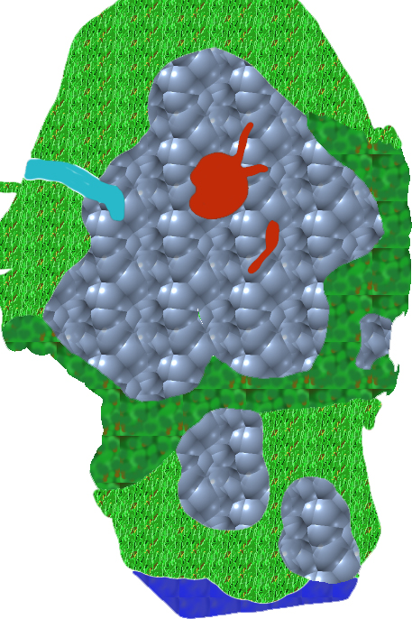

back
Mt.Doom

Mt.Doom is an active volcano on the continent. It slowly spew out lava and it is the home of many twisted and dangerous creatures. Wondering through the region is extremely dangerous.
Cities: There are no city in the region.
Landmark:
The volcano, Mt.Doom, itself is a worthy landmark of the continent, it is said that if the elementals deep inside the volcano gets angered too much, Mt.Doom would explode and send lava and a cloud of dust over the continent, dooming everyone to years of darkness
Related to Mt.Doom itself, there are two known lair in the volcano, one is a Dweller's Lair, but they are not usually friendly towards strangers, although they are not actively trying to hurt anyone either. The other Lair is a dragon's lair, not much information is known, but dragons have been sighted in the area. The last interesting feature on Mt.Doom is the naturally occuring Hot Spring occuring on its western side. Some adventurous citizen of Eulice sometimes wander there to enjoy the marvel that those springs are.
Last but not least, the Old Road connecting the Kingdom of Marns to the Kingdom of Eulice passes to the south of the volcano. This portion of the road is the most dangerous since the region is active with Goblins and bandits.
Environment:
The regions around Mt.Doom are extremely fertile and you can find some interesting specifies of plant around the area, but Mt.Doom itself is a big mountain filled with lava ready to explode at any moment. Some lava something flow down its side and it is not recommended to go too close incase you get trapped between two flows.
Wildlife and Monsters:
The southern portion of the Mt.Doom region is filled with Goblins and Bandit who prey on the travelling merchants and adventurer heading to the Kingdom of Eulice. The Volcano itself is filled with Kobold, Dwellers, Dragons and Elementals. There are rumors that deep inside the volcano, some devils might be at work.